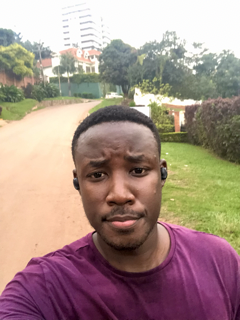

After several months of learning in the
Frontend Developer Career Path, I've made
the big jump over to the Bootcamp to get
expert code reviews of my Solo Projects
projects and meet like-minded peers.
How I stay committed to learning
I like to think of myself as a lifelong learner. I used to
spend hours and hours learning, then try to create simple
projects using what I learned or work new techniques into
existing projects.
While that was fun, I felt like it would be helpful to
share what I was learning and most things about my
journey with the world.
How I got started
I started simple and gradually grew my learning journal site.
I would take notes about what I was learning. After each
learning session, I'd use my notes to not only reflect on
what I learned but also write short summaries of what I
learned using my own words.
That helped me grok what I was learning, and I realized
that posting my learning summaries was also helping
others learn and stay motivated.

JULY 23, 2022
Blog one
I'm excited to start a new learning journey as a Scrimba Bootcamp
student! After several months of learning in the Frontend
Developer Career Path.

JULY 23, 2022
Blog two
I'm excited to start a new learning journey as a Scrimba Bootcamp
student! After several months of learning in the Frontend
Developer Career Path.

JULY 23, 2022
Blog three
I'm excited to start a new learning journey as a Scrimba Bootcamp
student! After several months of learning in the Frontend
Developer Career Path.